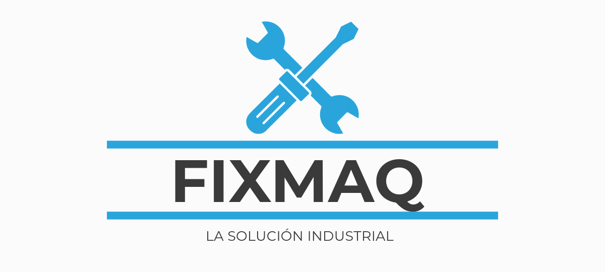

<mat-toolbar class="menuHeader" color="primary">
    
    <button mat-button *ngIf="!esEjecutor" (click)="actividadesAdmin()">Actividades</button>
    <button mat-button *ngIf="!esAdmin" (click)="actividadesEjec()">Actividades</button>
    <button mat-button *ngIf="!esEjecutor" (click)="usuarios()">Usuarios</button>
    <button mat-button *ngIf="!esEjecutor" (click)="auditorias()">Auditorias</button>
    <span class="spacer"></span>
    <button mat-flat-button (click)="cerrarSesion()"><mat-icon>close</mat-icon>Cerrar sesión</button>
</mat-toolbar>
